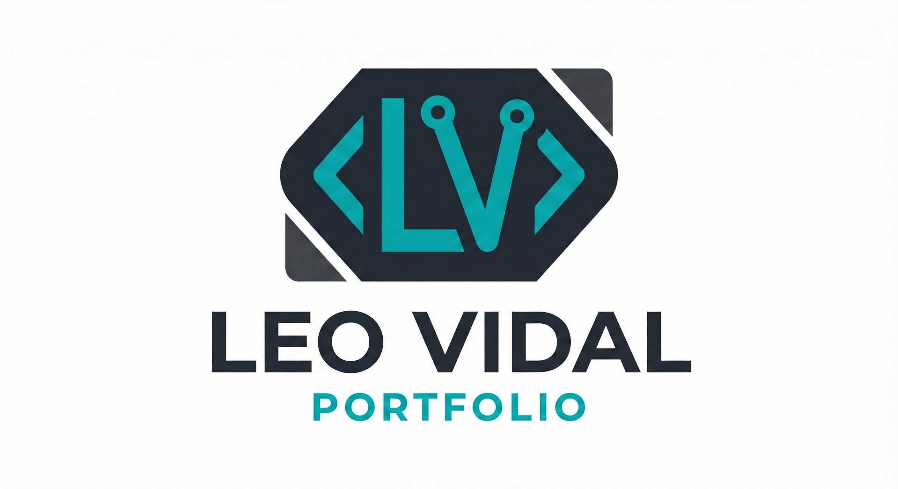
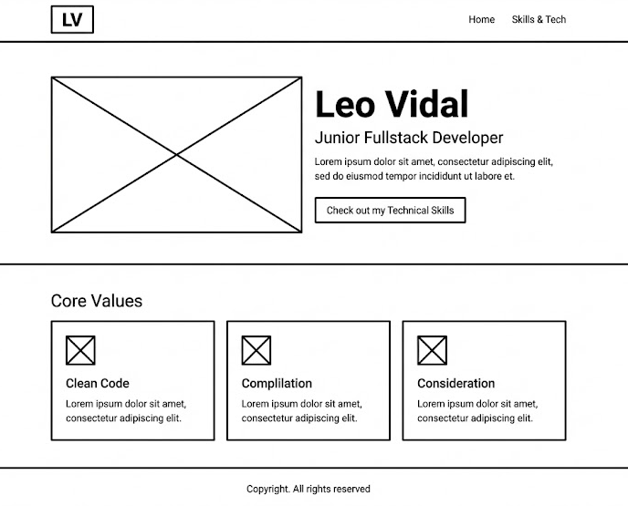
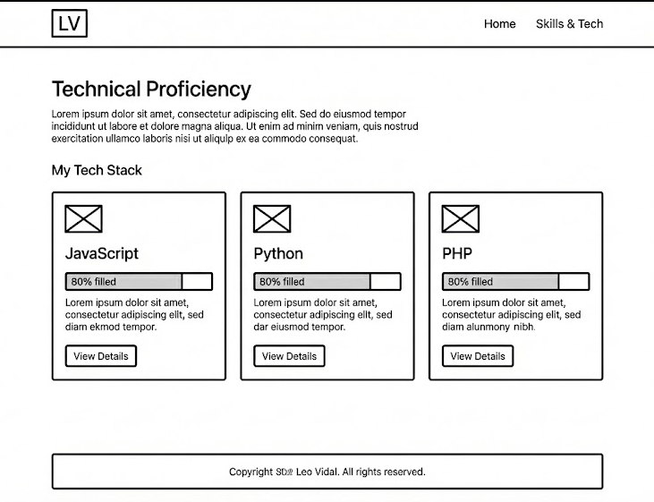

Overview
Purpose
The purpose of this website is to establish my personal brand as a competent Junior Fullstack Web Developer. It will serve as a digital portfolio to showcase my technical proficiency in JavaScript, Python, and PHP, demonstrating my ability to build responsive and dynamic web applications.
Audience
My primary audience consists of hiring managers, technical recruiters, and senior developers at tech companies who are looking to hire a Junior Fullstack Developer. They value clean code, modern design, and clear communication of technical skills.
Dynamic elements
I will demonstrate my JavaScript mastery by building an interactive "Skills Tracker" on the child page.
1. Objects & Arrays: I will store my skills (JS, Python, PHP) and proficiency levels in an Array of Objects.
2. ES Modules: I will store this data in a separate module file and import it into the main script.
3. Array Methods: I will use the .map() method to iterate through the array and dynamically generate HTML progress bars for each skill.
4. DOM & Events: I will add "View Details" buttons that listen for click events.
5. Conditionals: Inside the event listener, I will use conditional branching (if/else) to toggle the visibility of the skill descriptions (expanding or collapsing the card).
Branding
Website Logo
Style Guide
Color Palette
Palette URL: https://coolors.co/222831-393e46-00adb5-eeeeee| Primary | Secondary | Accent 1 | Accent 2 |
|---|---|---|---|
| [#222831] | [#393E46] | [#00ADB5] | [#EEEEEE] |
Typography
Heading Font: 'Roboto', sans-serif
Paragraph Font: 'Open Sans', sans-serif
Normal paragraph example
I am a passionate web developer with a focus on full-stack technologies. My goal is to create software that is not only functional but also accessible and performant. I enjoy solving complex problems using Python and JavaScript.
Colored paragraph example
I am a passionate web developer with a focus on full-stack technologies. My goal is to create software that is not only functional but also accessible and performant. I enjoy solving complex problems using Python and JavaScript.
Navigation
Content
Home page
Headline: Building the Web of Tomorrow.
Intro Text: Hi, I'm Leo Vidal. I am a Junior Fullstack Developer based in [Location]. I specialize in building robust web applications using modern technologies.
Featured Section: A brief look at my coding philosophy: Clean Code, User-Centric Design, and Continuous Learning.
Call to Action: "Check out my Technical Skills" (Link to child page).
Images: A professional profile photo (headshot) and a background hero image of code or a dark workspace setup (I'll be working on this).
Page 2: Skills Tracker
Headline: Technical Proficiency
Intro Text: Below is a dynamic overview of my current technology stack. I am constantly learning and updating these skills.
Data to be used (in Array/Objects):
- JavaScript: Advanced DOM manipulation, ES6+, Async/Await.
- Python: Scripting, Data handling, Back-end logic.
- PHP: Server-side form processing, Database connectivity.
Interaction: Users can click on a skill card to expand it and read about specific projects I have built with that language.
Wireframes
Create two wireframes for your site. One for each page and list them here
Home
The Home page features a large Hero Image with my name and title centered. Below that is a 3-column section highlighting my core values.
Page 2: Skills
The Skills page features a grid layout. Each card represents a language (JS, Python, PHP). The progress bars are generated by JavaScript.
